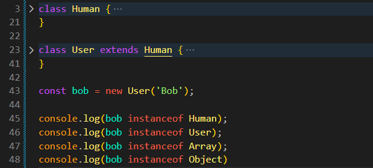

instanceOf
Intro
Agora que entendemos um pouco mais sobre herancas, iremos descobrir como verificar se um determinado objeto herda um determinado prototype. Ou se um objeto pertence a uma determinada class.
Agora que entendemos um pouco mais sobre herancas, iremos descobrir como verificar se um determinado objeto herda um determinado prototype. Ou se um objeto pertence a uma determinada class.
JS:

Para iniciar iremos criar dois constructors sendo eles: Human e User, ficando da seguinte forma:
class Human {
age = 0;
constructor(name) {
this.name = name;
}
celebrateBirthday() {
this.age++;
return console.log(`${this.name} is now ${this.age}`);
}
printInfo() {
const { age, name } = this;
console.log(`${name} is ${age}`);
}
}
class User extends Human {
friends = [];
constructor(name, role = 'User') {
super(name);
this.role = role;
}
get fullName() {
return `${this.role} ${this.name}`;
}
printInfo() {
const { friends, fullName } = this;
super.printInfo();
console.log(`${fullName} has ${friends.length} friends.`);
}
}
Como exemplo, na realidade Bob nao é apenas um User, mas tambem um Human, para fazermos isso, usamos o operador especial instanceOf(). Ficando da seguinte forma:
console.log(bob instanceof User) // True
Como resultado teremos true, quando fazemos isso, estamos verificando se bob herda da propriedade User.prototype, tambem podemos verificar se bob herda de Human.prototypee mais algumas opcoes:
console.log(bob instanceof Human) // True console.log(bob instanceof Array) // False console.log(bob instanceof Object) // True